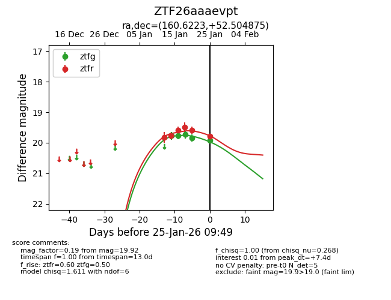
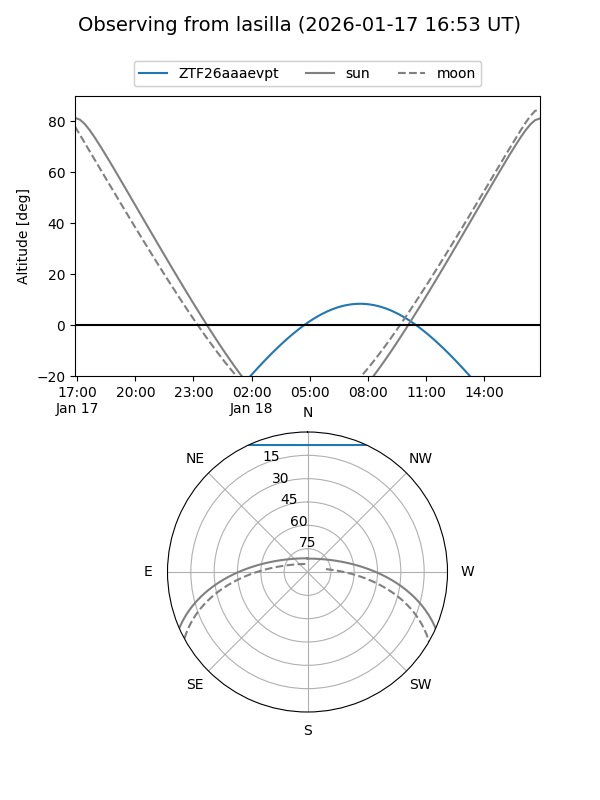
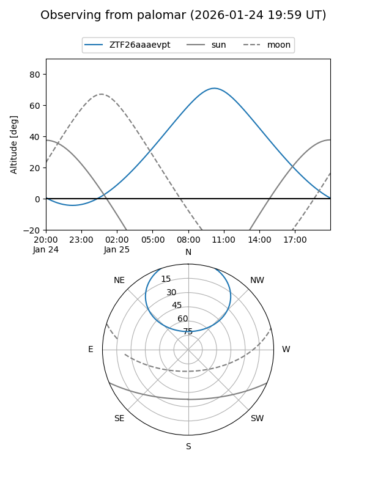
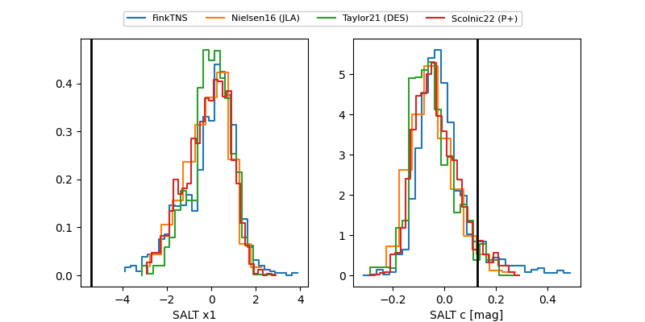

ZTF26aaaevpt
Target ZTF26aaaevpt at 2026-01-22 11:26
Aliases and brokers:
FINK: link
Lasair: link
ALeRCE: link
alt names
ZTF26aaaevpt (ztf,fink_ztf)
Coordinates:
equatorial (ra, dec) = 160.6223,+52.50488
equatorial (HMS+DMS) = 10:42:29.34,+52:30:17.55
galactic (l, b) = (157.4931,+55.08488)
Flags:
Photometry:
last ztfg=19.84, ztfr=19.59
4 ztfg, 5 ztfr detections
Lightcurve

Visibility


Additional plots
